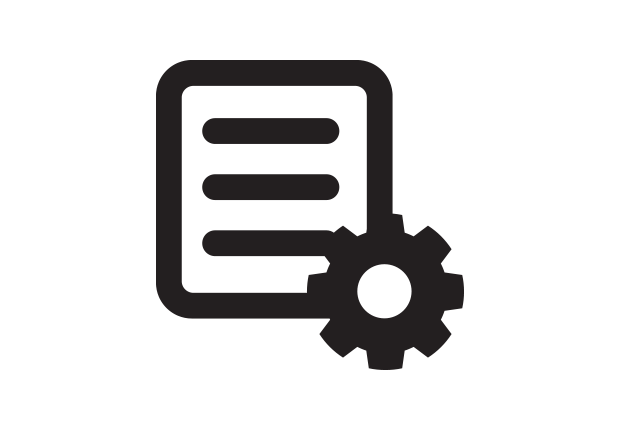
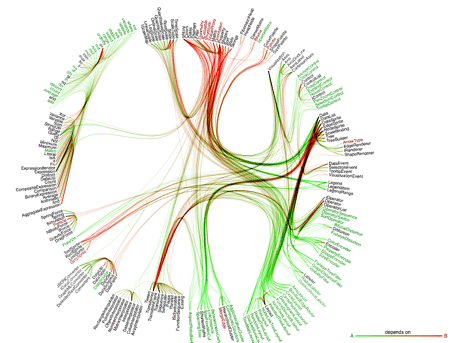
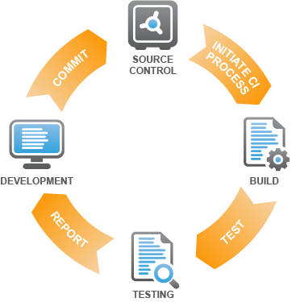
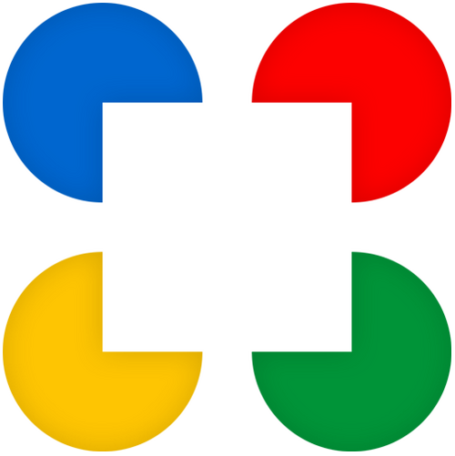

What I want


- 

- 
- 
- SAVE FILE

What Play! framework has
- 
Here come the challengers!!
Modern tools
- Yeoman: bootstrap application
 Bower: JavaScript dependencies management
Bower: JavaScript dependencies management- Grunt: do everything else in the universe
Yeoman
$ yo webapp
_-----_
| |
|--(o)--| .---------------------------.
`---------´ | Welcome to Yeoman, |
( _´U`_ ) | ladies and gentlemen! |
/___A___\ '_________________________'
| ~ |
__'.___.'__
´ ` |° ´ Y `
Out of the box I include HTML5 Boilerplate, jQuery and Modernizr.
Would you like to include Twitter Bootstrap for Sass? (Y/n)
Would you like to include RequireJS (for AMD support)? (Y/n)
create Gruntfile.js
create package.json
...
create test/lib/mocha/mocha.js
create test/spec/test.js
I m all done. Just run npm install && bower install to install the required dependencies.
$ yo angular
$ yo angular:controller
$ yo play:model
Bower
$ bower search zanimo
Search results:
- zanimo git://github.com/peutetre/Zanimo.git
$ bower install zanimo
bower cloning git://github.com/peutetre/Zanimo.git
bower caching git://github.com/peutetre/Zanimo.git
bower fetching zanimo
bower checking out zanimo#0.0.5
bower copying /home/paul/.bower/cache/zanimo/ef7f2fbbe5b210c1cd3c6a977ef66843
bower cloning git://github.com/kriskowal/q.git
bower caching git://github.com/kriskowal/q.git
bower fetching q
bower checking out q#v0.9.3
bower copying /home/paul/.bower/cache/q/31342087dd663a818f035ad7875662de
bower installing zanimo#0.0.5
bower installing q#0.9.3
component.json
{
"name": "zanimo",
"version": "0.0.5",
"readme": "README.md",
"main": "./dist/zanimo-0.0.5.js",
"ignore": [
...
],
"dependencies": {
"q": "~0.9.2"
},
"gitHead": "1526bf9fdc26adc6f29b3d71760875b6d4f2a863",
"_id": "zanimo@0.0.5",
"description": "README.md",
"repository": {
"type": "git",
"url": "git://github.com/peutetre/Zanimo.git"
}
}
Grunt
- Grunt is lightweight -> Gruntfile.js
- It's all about plugins (a lot of plugins)
-
Plugins give you tasks
- Move / Copy / Remove a directory
- Compile LESS / SASS / Stylus / CoffeeScript / ...
- Minify JavaScript and CSS files
- Run tests
- Watch your files
- Install Bower dependencies
- ...
- You can configure those tasks
- You can create tasks from tasks (beware of the infinite loop!)
Killer features demo time
Back to the future
Build the future
- Display Grunt errors on browser
- Add livereload to Play! error pages
- Investigate Grunt crashes when task fail
- Create
ZenexityZengularity boosted Bower server - Create Play! Yeoman generators
- Play! plugin
Thank You!
Now you can...
- Ask questions
- Send feedback
- Give me food